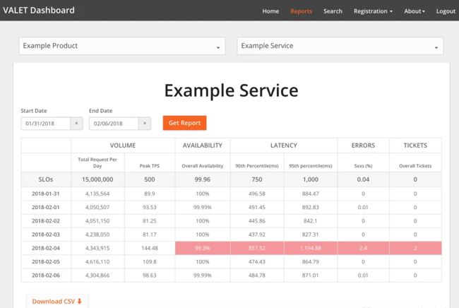
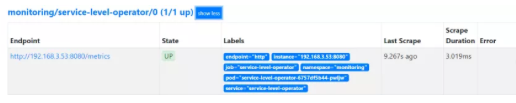
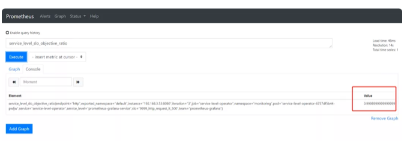
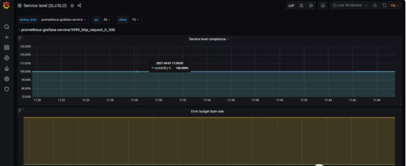
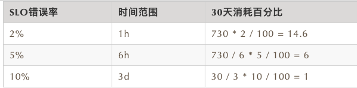

第十二节 通过Prometheus来做SLI/SLO监控展示
Service level operator有点意思，把服务SLI/SLO抽象成operator的想法就很运维
1 什么是SLI/SLO
-
SLI，全名Service Level Indicator，是服务等级指标的简称，它是衡定系统稳定性的指标。
-
SLO，全名Sevice Level Objective，是服务等级目标的简称，也就是我们设定的稳定性目标，比如"4个9"，"5个9"等。
SRE通常通过这两个指标来衡量系统的稳定性，其主要思路就是通过SLI来判断SLO，也就是通过一系列的指标来衡量我们的目标是否达到了"几个9"。
2 如何选择SLI
在系统中，常见的指标有很多种，比如：
- 系统层面：CPU使用率、内存使用率、磁盘使用率等
- 应用服务器层面：端口存活状态、JVM的状态等
- 应用运行层面：状态码、时延、QPS等
- 中间件层面：QPS、TPS、时延等
- 业务层面：成功率、增长速度等
这么多指标，应该如何选择呢？只要遵从两个原则就可以：
- 选择能够标识一个主体是否稳定的指标，如果不是这个主体本身的指标，或者不能标识主体稳定性的，就要排除在外。
- 优先选择与用户体验强相关或用户可以明显感知的指标。
通常情况下，可以直接使用谷歌的VALET指标方法。
- V：Volume，容量，服务承诺的最大容量
- A：Availability，可用性，服务是否正常
- L：Latency，延迟，服务的响应时间
- E：Error，错误率，请求错误率是多少
- T：Ticket，人工介入，是否需要人工介入
这就是谷歌使用VALET方法给的样例。

上面仅仅是简单的介绍了一下SLI/SLO，更多的知识可以学习《SRE：Google运维解密》和赵成老师的极客时间课程《SRE实践手册》。下面来简单介绍如何使用Prometheus来进行SLI/SLO监控。
service-level-operator
Service level operator是为了Kubernetes中的应用SLI/SLO指标来衡量应用的服务指标，并可以通过Grafana来进行展示。
Operator主要是通过SLO来查看和创建新的指标。例如：
https://github.com/spotahome/service-level-operator
apiVersion: monitoring.spotahome.com/v1alpha1
kind: ServiceLevel
metadata:
name: awesome-service
spec:
serviceLevelObjectives:
- name: "9999_http_request_lt_500"
description: 99.99% of requests must be served with <500 status code.
disable: false
availabilityObjectivePercent: 99.99
serviceLevelIndicator:
prometheus:
address: http://myprometheus:9090
totalQuery: sum(increase(http_request_total{host="awesome_service_io"}[2m]))
errorQuery: sum(increase(http_request_total{host="awesome_service_io", code=~"5.."}[2m]))
output:
prometheus:
labels:
team: a-team
iteration: "3"
- availabilityObjectivePercent：SLO
- totalQuery：总请求数
- errorQuery：错误请求数
Operator通过totalQuert和errorQuery就可以计算出SLO的指标了。
3 部署service-level-operator
前提：在Kubernetes集群中部署好Prometheus，我这里是采用Prometheus-Operator方式进行部署的。
首先创建RBAC
apiVersion: v1
kind: ServiceAccount
metadata:
name: service-level-operator
namespace: monitoring
labels:
app: service-level-operator
component: app
---
apiVersion: rbac.authorization.k8s.io/v1
kind: ClusterRole
metadata:
name: service-level-operator
labels:
app: service-level-operator
component: app
rules:
# Register and check CRDs.
- apiGroups:
- apiextensions.k8s.io
resources:
- customresourcedefinitions
verbs:
- "*"
# Operator logic.
- apiGroups:
- monitoring.spotahome.com
resources:
- servicelevels
- servicelevels/status
verbs:
- "*"
---
kind: ClusterRoleBinding
apiVersion: rbac.authorization.k8s.io/v1
metadata:
name: service-level-operator
subjects:
- kind: ServiceAccount
name: service-level-operator
namespace: monitoring
roleRef:
apiGroup: rbac.authorization.k8s.io
kind: ClusterRole
name: service-level-operator
然后创建Deployment
apiVersion: apps/v1
kind: Deployment
metadata:
name: service-level-operator
namespace: monitoring
labels:
app: service-level-operator
component: app
spec:
replicas: 1
selector:
matchLabels:
app: service-level-operator
component: app
strategy:
rollingUpdate:
maxUnavailable: 0
template:
metadata:
labels:
app: service-level-operator
component: app
spec:
serviceAccountName: service-level-operator
containers:
- name: app
imagePullPolicy: Always
image: quay.io/spotahome/service-level-operator:latest
ports:
- containerPort: 8080
name: http
protocol: TCP
readinessProbe:
httpGet:
path: /healthz/ready
port: http
livenessProbe:
httpGet:
path: /healthz/live
port: http
resources:
limits:
cpu: 220m
memory: 254Mi
requests:
cpu: 120m
memory: 128Mi
创建service
apiVersion: v1
kind: Service
metadata:
name: service-level-operator
namespace: monitoring
labels:
app: service-level-operator
component: app
spec:
ports:
- port: 80
protocol: TCP
name: http
targetPort: http
selector:
app: service-level-operator
component: app
创建prometheus serviceMonitor
apiVersion: monitoring.coreos.com/v1
kind: ServiceMonitor
metadata:
name: service-level-operator
namespace: monitoring
labels:
app: service-level-operator
component: app
prometheus: myprometheus
spec:
selector:
matchLabels:
app: service-level-operator
component: app
namespaceSelector:
matchNames:
- monitoring
endpoints:
- port: http
interval: 10s
到这里，Service Level Operator部署完成了，可以在prometheus上查看到对应的Target，如下：

然后就需要创建对应的服务指标了，如下所示创建一个示例。
apiVersion: monitoring.spotahome.com/v1alpha1
kind: ServiceLevel
metadata:
name: prometheus-grafana-service
namespace: monitoring
spec:
serviceLevelObjectives:
- name: "9999_http_request_lt_500"
description: 99.99% of requests must be served with <500 status code.
disable: false
availabilityObjectivePercent: 99.99
serviceLevelIndicator:
prometheus:
address: http://prometheus-k8s.monitoring.svc:9090
totalQuery: sum(increase(http_request_total{service="grafana"}[2m]))
errorQuery: sum(increase(http_request_total{service="grafana", code=~"5.."}[2m]))
output:
prometheus:
labels:
team: prometheus-grafana
iteration: "3"
上面定义了grafana应用"4个9"的SLO。
然后可以在Prometheus上看到具体的指标，如下。

接下来在Grafana上导入ID为8793的Dashboard，即可生成如下图表。

上面是SLI，下面是错误总预算和已消耗的错误。
下面可以定义告警规则，当SLO下降时可以第一时间收到，比如：
groups:
- name: slo.rules
rules:
- alert: SLOErrorRateTooFast1h
expr: |
(
increase(service_level_sli_result_error_ratio_total[1h])
/
increase(service_level_sli_result_count_total[1h])
) > (1 - service_level_slo_objective_ratio) * 14.6
labels:
severity: critical
team: a-team
annotations:
summary: The monthly SLO error budget consumed for 1h is greater than 2%
description: The error rate for 1h in the {{$labels.service_level}}/{{$labels.slo}} SLO error budget is being consumed too fast, is greater than 2% monthly budget.
- alert: SLOErrorRateTooFast6h
expr: |
(
increase(service_level_sli_result_error_ratio_total[6h])
/
increase(service_level_sli_result_count_total[6h])
) > (1 - service_level_slo_objective_ratio) * 6
labels:
severity: critical
team: a-team
annotations:
summary: The monthly SLO error budget consumed for 6h is greater than 5%
description: The error rate for 6h in the {{$labels.service_level}}/{{$labels.slo}} SLO error budget is being consumed too fast, is greater than 5% monthly budget.
第一条规则表示在1h内消耗的错误率大于30天内的2%，应该告警。第二条规则是在6h内的错误率大于30天的5%，应该告警。
下面是谷歌的的基准。

4 最后
说到系统稳定性，这里不得不提到系统可用性，SRE提高系统的稳定性，最终还是为了提升系统的可用时间，减少故障时间。那如何来衡量系统的可用性呢？
目前业界有两种衡量系统可用性的方式，一个是时间维度，一个是请求维度。时间维度就是从故障出发对系统的稳定性进行评估。请求维度是从成功请求占比的角度出发，对系统稳定性进行评估。
- 时间维度：可用性 = 服务时间 / （服务时间 + 故障时间）
- 请求维度：可用性 = 成功请求数 / 总请求数
在SRE实践中，通常会选择请求维度来衡量系统的稳定性，就如上面的例子。不过，如果仅仅通过一个维度来判断系统的稳定性也有点太武断，还应该结合更多的指标，比如延迟，错误率等，而且对核心应用，核心链路的SLI应该更细致。